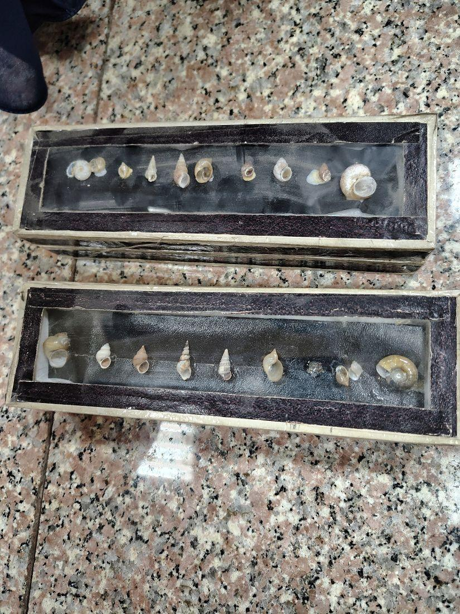

Every slide, jar and snail from Sections 1 to 7, with the morphology from the Atlas of Helminthology, and mock exams that mark the name and the description for you.
81specimens53slides15jars13snails
Mock examQuestion 7
NameFasciola hepatica adult
Morph.leaf shaped, short and broad
prominent shoulders, equal suckers
branched testes, tandem
2 / 2
Example answers, not your work.
Mode
Show
Section 1 · 18 specimens
Liver & rumen flukes
Fasciola, the amphistomes and Dicrocoelium, with the larval stages of Fasciola and Paramphistomum.
Identify the specimen and describe its morphology.
Fasciola gigantica adult
Final host
Ruminants, herbivores & man
Habitat
Bile duct & liver
IMH
Lymnaea (snail)
Infective stage
EMC on grass
Mode of infection
Per mouth
Leaf-like body with an anterior cone-shaped projection.
Cuticle with fine scales and spines.
Ventral sucker slightly larger than the oral sucker.
Intestinal caeca branched; the inner branch is T or Y shaped.
Two branched testes, tandem in position; ovary finely branched, anterior to the testes.
Vitelline glands are small follicles filling the whole lateral fields.
Spot it: Long leaf with two nearly parallel sides; longer than F. hepatica.
Identify the specimen and describe its morphology.
Fasciola gigantica adult
Final host
Ruminants, herbivores & man
Habitat
Bile duct & liver
IMH
Lymnaea (snail)
Infective stage
EMC on grass
Mode of infection
Per mouth
Greyish brown when fresh.
Leaf-shaped body with an anterior cone-shaped projection.
The two sides are more or less parallel.
Ventral sucker at the level of the shoulders, slightly larger than the oral sucker.
Spot it: Long flukes with parallel sides; shoulders not prominent.
Identify the specimen and describe its morphology.
Fasciola hepatica adult
Final host
Ruminants, herbivores & man
Habitat
Bile duct & liver
IMH
Lymnaea truncatula
Infective stage
EMC on grass
Mode of infection
Per mouth
Leaf-shaped and shorter than F. gigantica.
Shoulders more prominent; the two suckers nearly equal.
Inner branches of the caeca are small nodules.
Two branched testes, tandem; ovary finely branched, anterior to the testes.
Uterus convoluted, full of eggs, anterior to the testes, opening into the common genital pore.
Vitelline follicles fill the whole lateral fields.
Spot it: Short broad leaf with prominent shoulders; sides make a V.
Identify the specimen and describe its morphology.
Fasciola hepatica adult
Final host
Ruminants, herbivores & man
Habitat
Bile duct & liver
IMH
Lymnaea truncatula
Infective stage
EMC on grass
Mode of infection
Per mouth
Greyish brown when fresh.
Leaf-shaped, shorter than F. gigantica.
Shoulders more prominent.
The two sides make a V shape.
The two suckers are nearly equal.
Spot it: Short, broad, V-shaped flukes.
Identify the specimen and describe its morphology.
Paramphistomum spp. adult
Final host
Ruminants
Habitat
Rumen (adult)
IMH
Bulinus truncatus, Biomphalaria alexandrina
Infective stage
EMC on grass
Pear-shaped with a smooth cuticle.
Fixation by an oral and a posterior sucker; no genital sucker.
Intestinal caeca simple, unbranched, reaching the posterior end.
Hermaphrodite; testes slightly lobulated, tandem.
Ovary small, posterior to the testes.
Vitelline glands lateral and extracaecal along the body length.
Spot it: Conical fluke with a big posterior sucker and no genital sucker.
Identify the specimen and describe its morphology.
Paramphistomum spp. adult
Final host
Ruminants
Habitat
Rumen (adult)
IMH
Bulinus truncatus, Biomphalaria alexandrina
Infective stage
EMC on grass
Ruminal flukes (amphistomes).
Conical, medium-sized flukes, light red when fresh.
Pear-shaped, with a posterior sucker.
Spot it: Jar full of small pear- or rice-shaped flukes.
Identify the specimen and describe its morphology.
Cotylophoron cotylophorum adult
Final host
Ruminants
Habitat
Rumen (adult)
Closely resembles Paramphistomum.
Has a genital sucker around the genital pore.
Spot it: Amphistome with a genital sucker around the genital pore.
Identify the specimen and describe its morphology.
Gastrodiscus aegyptiacus adult
Habitat
Intestine (intestinal fluke)
IMH
Cleopatra bulimoides, C. cyclostomoides
Anterior part cylindrical, posterior part discoidal.
Ventral surface of the disc carries many tubercles or large papillae.
Oesophagus has two posterolateral pouches.
Oral and posterior sucker; no genital sucker.
Caeca simple, unbranched, to the posterior end.
Testes lobulated, diagonal; ovary posterior to them.
Vitelline glands lateral, extracaecal along the body.
Spot it: Small cylinder on a big papillated disc.
Identify the specimen and describe its morphology.
Gastrodiscus aegyptiacus adult
Habitat
Intestine (intestinal fluke)
Pink when fresh.
Body divided by a constriction into a small cylindrical anterior part and a large discoidal, ventrally concave posterior part.
The ventral sucker is relatively small and subterminal.
Spot it: Round discs with a small knob in front.
Identify the specimen and describe its morphology.
Carmyerius gregarius adult
Final host
Ruminants
Habitat
Rumen (adult)
Closely resembles Paramphistomum.
Intestinal caeca simple, unbranched, reaching only the middle of the body.
Testes slightly lobulated and horizontal at the posterior part.
Spot it: Amphistome whose caeca stop at mid-body; testes side by side.
Identify the specimen and describe its morphology.
Dicrocoelium dendriticum adult
Final host
Ruminants, herbivores, rabbit & man
Habitat
Bile duct & liver
Egg
Mature, does not hatch
1st IMH
Land snails (Helicella, Zebrina)
2nd IMH
Black ants
Infective stage
EMC in black ants
Elongated lancet-shaped body with a smooth cuticle.
Intestinal caeca simple, unbranched.
Testes slightly lobed, tandem.
Ovary directly behind the testes.
Vitelline glands occupy the middle third of the lateral fields.
Spot it: Small lancet with the testes in front of the ovary.
Identify the specimen and describe its morphology.
Fasciola spp. miracidium
Triangular in shape.
Broad anteriorly with a small papilliform protrusion.
Ciliated cuticle.
A pair of eye spots in the anterior half.
Penetrates the snail and changes into a sporocyst.
Spot it: Ciliated triangle with eye spots.
Identify the specimen and describe its morphology.
Fasciola spp. encysted metacercaria (EMC)
The infective stage of Fasciola.
Spherical cyst covered by a thick cyst wall.
Unclear internal structure.
Found on grass.
Spot it: Dark round cyst with a thick wall, on grass.
Identify the specimen and describe its morphology.
Fasciola spp. egg
Large and ovoid.
Golden yellow.
Thin, operculated shell.
Immature: one-cell embryo masked by several yolk cells.
Spot it: Large golden-yellow operculated egg, embryo hidden by yolk.
Identify the specimen and describe its morphology.
Paramphistomum spp. egg
Oval and large.
Thin shell, grey in colour.
Operculated.
Immature: one-cell embryo not masked by the yolk cells; develops and hatches in water.
Spot it: Large grey operculated egg with the embryo visible.
Identify the specimen and describe its morphology.
Fasciola spp. redia
Present inside the snail.
Elongated body with a muscular pharynx.
Head collar at the level of the pharynx.
Birth pore anteriorly.
Two lateral processes near the posterior end.
Body filled with germ balls, daughter rediae or cercariae.
Spot it: Sac with a pharynx, a collar and two posterior processes.
Identify the specimen and describe its morphology.
Fasciola spp. cercaria
Develops inside the redia in the snail.
Leptocercous type: body with a simple tail.
Body : tail = 1 : 3.
No eye spots.
Oral sucker, ventral sucker and muscular pharynx.
Two simple intestinal caeca.
Spot it: Round body, simple tail three times its length, no pigment.
Identify the specimen and describe its morphology.
Paramphistomum spp. cercaria
Leptocercous cercaria with a simple tail (body : tail = 1 : 3).
Spherical or oval cyst; the metacercaria is seen rolling inside.
The infective stage to the final host.
Spot it: Small cysts in fish muscle.
Identify the specimen and describe its morphology.
Schistosoma bovis adult male
Final host
Cattle
Habitat
Portal & mesenteric veins
Egg
Mature, hatches; spined, no operculum
IMH
Bulinus truncatus, Biomphalaria alexandrina
Cercaria
Furcocercous
Infective stage
Free-swimming cercaria
Mode of infection
Skin penetration
Small cylindrical anterior part and a flattened posterior part curved ventrally into the gynaecophoric canal, where the female lies.
Cuticle spined ventrally with small tubercles dorsally.
Oral and ventral suckers pedunculated.
Intestine bifurcates and reunites one or several times backwards.
Testes 3 to 6 (usually 4) in a longitudinal row, a short distance behind the ventral sucker.
Spot it: Stout worm folded into a C, with a gynaecophoric canal.
Identify the specimen and describe its morphology.
Schistosoma bovis adult female
Long and cylindrical, thread-like.
Smooth cuticle.
Oral and ventral suckers weak and close to each other.
Intestine bifurcates then reunites into one tube.
Ovary at the middle of the body.
Uterus straight, running forwards.
Spot it: Long thin thread, much slimmer than the male.
Identify the specimen and describe its morphology.
Schistosoma spp. cercaria
Furcocercous cercaria (forked tail).
Body : tail = 1 : 3.
Armed with spines.
Four pairs of cephalic (penetration) glands, two acidophilic and two basophilic.
Does not form an EMC.
Spot it: The tail splits into a fork.
Identify the specimen and describe its morphology.
Echinostoma revolutum adult
1st IMH
Physa acuta, Melania tuberculata
Hosts
Aquatic birds
Elongated, with a spiny cuticle anteriorly.
Oral sucker surrounded by a fleshy horseshoe-shaped head collar carrying 37 spines.
Wide ventral sucker.
Caeca simple, reaching the end of the body.
Testes tandem, oval or slightly lobed, behind the middle.
Ovary and uterus anterior to the testes.
Vitelline glands lateral and extracaecal.
Spot it: Head collar of 37 spines round the oral sucker.
Identify the specimen and describe its morphology.
Echinostoma revolutum cercaria
Leptocercous, with a simple short tail.
Body : tail = 1 : 1.
Oral sucker surrounded by a head collar with spines.
Spot it: Tail as long as the body; spined collar.
Sections 1 & 2 · 13 specimens
Snails
The dried snails that act as intermediate hosts. Know the shell, the coiling and which fluke uses it.
Identify the specimen and describe its morphology.
Lymnaea stagnalis snail
Fresh-water snail.
Right-handed (dextral).
Thick shell.
Large, with a pointed apex.
Large oval aperture.
Spot it: Big right-handed shell, pointed apex, wide aperture.
Identify the specimen and describe its morphology.
Lymnaea truncatula snail
Role
IMH of Fasciola hepatica
Amphibian, fresh-water related snail.
Right-handed.
Brown to dark.
Thick shell.
Resembles L. stagnalis but small; the opening is not more than half the shell length.
Spot it: Several tiny dark right-handed shells.
Identify the specimen and describe its morphology.
Lymnaea cailliaudi snail
Role
IMH of Fasciola gigantica
Fresh-water snail.
Right-handed (dextral).
Thin fragile shell.
Pointed apex.
Large body whorl.
Large oval aperture.
Spot it: Thin fragile shell almost all body whorl.
Identify the specimen and describe its morphology.
Zebrina snail
Role
1st IMH of Dicrocoelium
Land snail.
Right-handed.
Thick shell with distinct sutures.
Conical, with longitudinal stripes.
Aperture is 1/4 of the total length.
Blunt apex.
Spot it: Pair of white conical land snails with stripes.
Identify the specimen and describe its morphology.
Helicella snail
Role
1st IMH of Dicrocoelium
Land snail.
Right-handed.
Thick shell.
Button-shaped with a blunt apex and raised centre.
Deep umbilicus.
Spot it: Flattened button shell with a deep umbilicus.
Identify the specimen and describe its morphology.
Cleopatra bulimoides snail
Role
IMH of Gastrodiscus aegyptiacus
Fresh-water snail.
Right-handed.
Blunt apex.
Brown.
Oblique whorls with spiral dark bands.
Spot it: Small brown right-handed shell with dark bands.
Identify the specimen and describe its morphology.
Cleopatra cyclostomoides snail
Role
IMH of Gastrodiscus aegyptiacus
Resembles Cleopatra bulimoides but whitish in colour.
Spot it: Like C. bulimoides, but whitish.
Identify the specimen and describe its morphology.
Biomphalaria alexandrina snail
Role
IMH of Schistosoma and the amphistomes
Fresh-water snail.
Left-handed.
Button-shaped with a depressed centre.
Smooth shell.
Spot it: Flat coiled disc, depressed in the centre.
Identify the specimen and describe its morphology.
Bulinus truncatus snail
Role
IMH of Schistosoma bovis and Paramphistomum
Fresh-water snail.
Left-handed.
Blunt apex.
Smooth shell.
Spot it: Small left-handed shell with a blunt apex.
Identify the specimen and describe its morphology.
Pirenella conica snail
Role
1st IMH of Heterophyes heterophyes
Brackish-water snail.
Right-handed.
Conical with a sharp apex.
Less oblique whorls.
Thick shell with coarse ornamentation: large, few tubercles in one to four rows.
Has a siphonal notch.
Spot it: Tall dark cone with coarse tubercles and a siphonal notch.
Identify the specimen and describe its morphology.
Physa acuta snail
Role
1st IMH of Echinostoma revolutum
Fresh-water snail.
Left-handed.
Less oblique whorls.
Pointed apex.
Spot it: Small left-handed shell with a pointed apex.
Identify the specimen and describe its morphology.
Melania tuberculata snail
Role
1st IMH of Echinostoma revolutum
Fresh-water snail.
Right-handed.
Conical.
Ornamented shell with fine tubercles, small and many.
No siphonal notch.
Spot it: Tall cone with fine tubercles and no siphonal notch.
Identify the specimen and describe its morphology.
Vivipara spp. snail
Fresh-water snail.
Right-handed.
Sharp apex.
Smooth shell with deep sutures.
A small deep umbilicus.
Spot it: Smooth globular shell, deep sutures.

The display box of intermediate hosts for all trematodes, as shown in Section 2.
Sections 3 & 4 · 21 specimens
Taeniids & Dipylidium
Taenia of man and dog, their bladder worms, Echinococcus and Dipylidium, with Diphyllobothrium.
Identify the specimen and describe its morphology.
Diphyllobothrium latum mature segment
Squarish to broader than long.
Ovary bilobed, posterior in the segment.
Testes and vitelline glands in the mixed lateral fields.
Uterus a dark central coiled tube, rosette-shaped, full of eggs.
Uterine pore present ventrally.
Common genital pore ventral, anterior to the uterine pore.
Spot it: Central dark rosette uterus with a ventral pore.
Identify the specimen and describe its morphology.
Taenia spp. of man
Final host
Man
Habitat
Small intestine
IMH
Cattle (T. saginata), man & pig (T. solium)
Whole worm 4 to 8 metres long (rarely 10).
Mature segments are squarish.
Gravid segments are longer than broad.
Genital pores single, irregularly alternating.
Spot it: Long ribbon of segments; gravid ones longer than broad.
Identify the specimen and describe its morphology.
Taenia saginata scolex
Final host
Man
IMH
Cattle
Larval stage
Cysticercus bovis
Quadrate and large.
Four cup-shaped suckers.
No rostellum, no hooks.
Spot it: Square head, four suckers, unarmed.
Identify the specimen and describe its morphology.
Taenia solium scolex
Final host
Man
Habitat
Small intestine
IMH
Man & pig
Larval stage
Cysticercus cellulosae
Infective stage
C. cellulosae in muscle
Mode of infection
Per mouth
Globular, with four cup-shaped suckers.
A rostellum carrying two crowns of taenioid hooks (22 to 32).
Spot it: Round head with a hooked rostellum.
Identify the specimen and describe its morphology.
Taenia spp. mature segment
Nearly squarish.
Ovary bilobed, posterior.
Vitelline gland a compact mass behind the ovary.
Testes distributed all over the segment.
Uterus a simple blind tube with no uterine pore.
Common genital pore unilateral, irregularly alternating.
Spot it: Square segment, bilobed ovary, single lateral pore.
Identify the specimen and describe its morphology.
Taenia spp. gravid segment
Longer than broad.
Uterus becomes a longitudinal stem with 15 to 20 main lateral branches on each side.
Other organs atrophied.
Spot it: Long segment with a branched uterus.
Identify the specimen and describe its morphology.
Taenia spp. egg
Brownish.
Globular, with a double-contoured, radially striated embryophore.
Mature eggs contain a hexacanth embryo.
Spot it: Round brown egg with a striated shell.
Identify the specimen and describe its morphology.
Cysticercus bovis
Host
Cattle
Habitat
Intermuscular connective tissue of heavy muscles (shoulder, thigh), liver, tongue & heart
Adult
Taenia saginata
Whitish bladder-like cyst of different sizes.
Spherical or elliptical, semi-transparent wall, some cystic fluid.
Each cyst has one macroscopic invaginated scolex.
On a slide: four suckers, no hooks and no rostellum.
Spot it: Small cysts in beef muscle.
Identify the specimen and describe its morphology.
Cysticercus cellulosae
Host
Man & pig
Habitat
Intermuscular connective tissue of heavy muscles, liver, tongue & heart
Adult
Taenia solium
Bladder-like cyst with one invaginated scolex with four suckers.
Rostellum armed with 2 rows of taenioid hooks.
Spot it: Invaginated scolex with a hooked rostellum.
Identify the specimen and describe its morphology.
Coenurus serialis
Adult
Multiceps serialis of dogs
Habitat
Intermuscular & subcutaneous tissue of rabbits
Larval stage of Multiceps serialis.
Transparent wall.
Numerous macroscopic invaginated scolices arranged in lines (serially).
Spot it: Many scolices in rows inside one cyst.
Identify the specimen and describe its morphology.
Cysticercus tenuicollis
Adult
Taenia hydatigena of dogs
Habitat
Peritoneal cavity & liver of sheep, cattle and wild ruminants
Large (1 to 7 cm in diameter).
Bladder-like, with a semi-transparent wall.
Large amount of cystic fluid.
Long neck with one invaginated scolex.
Spot it: Big water bladder with one long-necked scolex.
Identify the specimen and describe its morphology.
Taenia spp. of dog
Final host
Dog
Smaller than the Taenia of man.
Mature segments squarish; gravid ones longer than broad.
Rostellum armed with a double crown of taenioid hooks.
Spot it: Tangle of tapeworms smaller than the human ones.
Identify the specimen and describe its morphology.
Cysticercus fasciolaris
Adult
Taenia taeniaeformis of cats
Habitat
Liver of rats and mice
Small vesicle attached to a long pseudo-segmented neck.
Scolex with a rostellum carrying two crowns of taenioid hooks.
Spot it: Small bladder on a long segmented-looking neck.
Identify the specimen and describe its morphology.
Echinococcus granulosus whole worm
Final host
Dog
Larval stage
Hydatid cyst
Strobila of 3 to 4 (usually 3) segments: one immature, one mature, the third gravid.
Genital pores single, irregularly alternating.
Very small scolex with four suckers and a rostellum with 2 crowns of taenioid hooks.
Mature segment like Taenia but longer than broad.
Gravid segment longer than broad; uterus with lateral pouches full of eggs.
Spot it: A whole worm of only three segments.
Identify the specimen and describe its morphology.
Hydatid cyst
Adult
Echinococcus granulosus of dogs
Habitat
Any organ, mainly lungs and liver, of any mammal except dogs
Hen's egg to child's head in size.
Large spherical or ovoid cyst with an opaque thick fibrous wall.
Large amount of cystic fluid.
Many scolices on the germinal layer, in brood capsules, daughter cysts or free in the fluid (hydatid sand).
Spot it: Thick-walled cysts in an organ.
Identify the specimen and describe its morphology.
Hydatid sand
A group of microscopic scolices and brood capsules swimming in the hydatid fluid.
Scolices with invaginated heads provided with several hooks.
Spot it: Many small scolices scattered in fluid.
Identify the specimen and describe its morphology.
Dipylidium caninum scolex
Final host
Dog, fox, cat, rarely man
Habitat
Small intestine
IMH
Flea of man, dog & cat; dog louse
Larval stage
Cryptocystic cysticercoid
Comparatively small.
Four suckers.
Protrusible, retractable rostellum armed with rose-thorn-shaped hooks in 3 to 7 spiral rows.
Spot it: Small scolex with a long protrusible rostellum.
Identify the specimen and describe its morphology.
Dipylidium caninum mature segment
Longer than broad (cucumber seed in shape).
Two sets of genital organs and 2 common genital pores.
Testes throughout the segment.
Ovaries horseshoe-shaped; vitelline glands a compact mass behind them, like a bunch of grapes.
Spot it: Cucumber-seed segment with a pore on each side.
Identify the specimen and describe its morphology.
Dipylidium caninum gravid segment
Much longer than broad, narrow at both ends (cucumber seed).
Uterus breaks down into a number of egg capsules, each containing more than one egg.
Spot it: Long segment packed with egg capsules.
Identify the specimen and describe its morphology.
Dipylidium caninum egg capsules
Spherical, thin-shelled.
Each capsule contains 8 to 20 ova.
Spot it: Packets of 8 to 20 eggs.
Identify the specimen and describe its morphology.
Dipylidium caninum
Final host
Dog, fox, cat, rarely man
Habitat
Small intestine
15 to 50 cm long.
Light reddish yellow when fresh.
Segments longer than broad (cucumber seed in shape).
Genital pores bilateral.
Spot it: Slender worm of cucumber-seed segments.
Section 5 · 12 specimens
Ruminant & horse tapeworms
Moniezia, Avitellina, Stilesia and Anoplocephala: segments, jars and the triangular egg.
Identify the specimen and describe its morphology.
Moniezia expansa mature segment
Final host
Ruminants
Habitat
Small intestine
IMH
Oribatid mites
Larval stage
Cercocystic cysticercoid
Broader than long, with 2 sets of genital organs and 2 common genital pores.
Testes throughout the central field.
Interproglottidal glands extend along the whole posterior border of each segment.
Spot it: Rosettes of glands along the whole posterior border.
Identify the specimen and describe its morphology.
Moniezia benedeni mature segment
Final host
Ruminants
Habitat
Small intestine
IMH
Oribatid mites
Larval stage
Cercocystic cysticercoid
Broader than long, with 2 sets of genital organs and 2 common genital pores.
Interproglottidal glands in a short continuous (linear) row in the middle field at the posterior margin.
Spot it: Short straight row of glands in the middle only.
Identify the specimen and describe its morphology.
Moniezia trigonophora mature segment
Final host
Ruminants
Habitat
Small intestine
IMH
Oribatid mites
Larval stage
Cercocystic cysticercoid
Broader than long, with 2 sets of genital organs and 2 common genital pores.
Interproglottidal glands along the whole posterior border.
Testes grouped in two pyramids towards the sets of genital organs.
Spot it: Testes in two pyramids.
Identify the specimen and describe its morphology.
Moniezia spp. gravid segment
Segments broader than long.
Genital organs disappeared.
Uterus becomes a network filled with eggs.
Spot it: Wide segments, uterus a network of eggs.
Identify the specimen and describe its morphology.
Avitellina spp. mature segment
Final host
Ruminants
Habitat
Small intestine
IMH
Oribatid mites
Larval stage
Cercocystic cysticercoid
Very narrow and long.
One set of genital organs and one common genital pore, irregularly alternating.
Testes lateral and medial to the excretory canals.
Ovary spherical, towards the side of the genital pore (poral).
Uterus a simple transverse sac in the middle field.
Vitelline glands absent.
Spot it: Narrow strobila, no vitelline glands, one pore per segment.
Identify the specimen and describe its morphology.
Avitellina spp. gravid segment
Broader than long.
Uterus forms one paruterine organ in each segment.
Spot it: One paruterine organ per segment, forming a central chain.
Identify the specimen and describe its morphology.
Stilesia hepatica mature segment
Final host
Ruminants
Habitat
Liver (bile ducts)
IMH
Oribatid mites
Larval stage
Cercocystic cysticercoid
Broader than long, one set of genital organs and one common genital pore.
Vitelline glands absent.
Uterus of two portions united by a transverse duct.
Spot it: Two uterine portions joined across the segment.
Identify the specimen and describe its morphology.
Stilesia hepatica gravid segment
Segments broader than long.
Uterus forms 2 paruterine organs filled with eggs.
Spot it: Two paruterine organs per segment, giving two rows of beads.
Identify the specimen and describe its morphology.
Moniezia spp.
Final host
Ruminants
Habitat
Small intestine
IMH
Oribatid mites
Larval stage
Cercocystic cysticercoid
Long and broad tapeworm.
Segments large, broader than long.
Each segment has 2 sets of genital organs and 2 common genital pores.
Spot it: Broad yellowish ribbons.
Identify the specimen and describe its morphology.
Avitellina spp.
Final host
Ruminants
Habitat
Small intestine
IMH
Oribatid mites
Larval stage
Cercocystic cysticercoid
Very narrow and long worm.
Segmentation is not clear.
Spot it: Narrow white threads with no visible segments.
Identify the specimen and describe its morphology.
Anoplocephala magna
Final host
Equines
Habitat
Small intestine, rarely the stomach
IMH
Oribatid mites
Larval stage
Cercocystic cysticercoid
Large (about 80 × 2 cm).
Scolex large and prominent.
Segments very wide, short and overlapped.
Spot it: Thick worm of short, wide, overlapping segments.
Identify the specimen and describe its morphology.
Moniezia and Anoplocephala spp. egg
Triangular or quadrangular.
A well-developed pyriform apparatus whose horns end in a cap.
Mature: contains a hexacanth embryo.
Membranous shell of several layers.
Spot it: Angular eggs with a pear-shaped apparatus.
Section 7 · 9 specimens
Poultry & rodent tapeworms
Cotugnia, Raillietina and Hymenolepis diminuta: scolex, mature and gravid segments.
Identify the specimen and describe its morphology.
Cotugnia digonopora scolex
Final host
Poultry
Habitat
Small intestine
IMH
Insects
Larval stage
Cercocystic cysticercoid
Relatively large, with four suckers and a rostellum.
Only the rostellum is armed, with 2 crowns of hammer-shaped hooks.
Spot it: Large scolex; hooks on the rostellum only.
Identify the specimen and describe its morphology.
Cotugnia digonopora mature segment
Final host
Poultry
Habitat
Small intestine
IMH
Insects
Larval stage
Cercocystic cysticercoid
Broader than long with 2 sets of genital organs and 2 common genital pores.
Testes scattered at the level of the ovary.
Spot it: Poultry segment with a pore on both sides.
Identify the specimen and describe its morphology.
Cotugnia digonopora gravid segment
Broader than long or squarish.
Uterus breaks down into egg capsules, each containing one egg.
Spot it: Egg capsules with one egg each.
Identify the specimen and describe its morphology.
Raillietina spp. scolex
Final host
Poultry
Habitat
Small intestine
IMH
Insects
Larval stage
Cercocystic cysticercoid
Relatively small, with a small rostellum armed with hammer-shaped hooks in one or two rows.
Suckers rounded or oval, armed with hooklets.
Spot it: Small scolex whose suckers are armed too.
Identify the specimen and describe its morphology.
Raillietina spp. mature segment
Final host
Poultry
Habitat
Small intestine
IMH
Insects
Larval stage
Cercocystic cysticercoid
Broader than long with one set of genital organs and one unilateral common genital pore.
Ovary in the centre with the testes scattered around it.
Spot it: One pore per segment; testes round a central ovary.
Identify the specimen and describe its morphology.
Raillietina spp. gravid segment
Broader than long or squarish.
Uterus breaks down into egg capsules, each bearing several ova.
Spot it: Egg capsules with several eggs each.
Identify the specimen and describe its morphology.
Hymenolepis diminuta mature segment
Final host
Rats & mice
Habitat
Small intestine
IMH
Insects (fleas & beetles)
Larval stage
Cercocystic cysticercoid
Narrow and broader than long, one set of genital organs and one common genital pore.
Only 3 testes: one poral and two aporal.
Ovary in the middle.
Spot it: Three round testes in a row.
Identify the specimen and describe its morphology.
Hymenolepis diminuta gravid segment
Broader than long.
Uterus becomes a transverse sac filled with eggs.
Spot it: Wide segments, each with a transverse sac of eggs.
Identify the specimen and describe its morphology.
Cestodes of poultry
Final host
Poultry
Habitat
Small intestine
IMH
Insects
Larval stage
Cercocystic cysticercoid
Davainea, Raillietina, Cotugnia and Hymenolepis.
Segments narrow, clear and thin, broader than long or squarish.
Whitish, with a single or double set of genital organs and pores.
Spot it: Thin whitish worms in a small bottle.
Easily confused
Pairs that look alike on the bench, and the one feature that tells them apart.
Fasciola gigantica vs Fasciola hepatica
gigantica is long with parallel sides and weak shoulders. hepatica is short and broad with prominent shoulders, sides making a V, and equal suckers.
Paramphistomum vs Cotylophoron · Carmyerius
All three are amphistomes. Cotylophoron adds a genital sucker round the genital pore. Carmyerius has caeca that stop at mid-body and testes lying side by side.
Taenia saginata scolex vs Taenia solium scolex
saginata: quadrate, no rostellum, no hooks. solium: globular, rostellum with two crowns of 22 to 32 hooks.
Cysticercus bovis vs Cysticercus cellulosae
Both are bladders with one scolex. bovis (cattle) is unarmed; cellulosae (man and pig) has a hooked rostellum.
Moniezia expansa vs Moniezia benedeni
expansa: interproglottidal glands along the whole posterior border. benedeni: a short linear row in the middle only. trigonophora: testes in two pyramids.
Avitellina gravid vs Stilesia gravid
Avitellina has one paruterine organ per segment; Stilesia has two. Both lack vitelline glands.
Cotugnia vs Raillietina
Cotugnia has two pores per segment, hooks on the rostellum only and one egg per capsule. Raillietina has one pore, armed suckers and several eggs per capsule.
Dipylidium egg capsules vs Raillietina egg capsules
Dipylidium capsules hold 8 to 20 ova and come from a dog tapeworm with cucumber-seed segments; Raillietina is from poultry.
Fasciola cercaria vs Paramphistomum cercaria
Both are leptocercous with tail three times the body. The amphistome one is pigmented (cercaria pigmentata) with its sucker at the back.
Schistosoma cercaria vs Echinostoma cercaria
Schistosoma: forked tail (furcocercous), no EMC. Echinostoma: short simple tail as long as the body, spined head collar.
Bulinus truncatus vs Biomphalaria alexandrina
Both left-handed with smooth shells. Bulinus is a small spired shell with a blunt apex; Biomphalaria is a flat button with a depressed centre.
Pirenella conica vs Melania tuberculata
Both tall cones. Pirenella is brackish-water with few coarse tubercles and a siphonal notch; Melania is fresh-water with many fine tubercles and no notch.
Mock exam
Each question shows a photo. Write the name of the specimen and its morphology; the site marks both against the Atlas.
How it is marked
Name, 1 point. Genus, species and stage must all be there, for example "Taenia solium scolex". Small spelling slips and initials like "F. hepatica" are accepted. The right genus alone earns half.
Morphology, 1 point. Each feature you write is matched with the Atlas description. Three correct features give the full point.
Review. At the end you see what you wrote, the points you gave, the ones you missed, and the one feature that identifies the specimen.